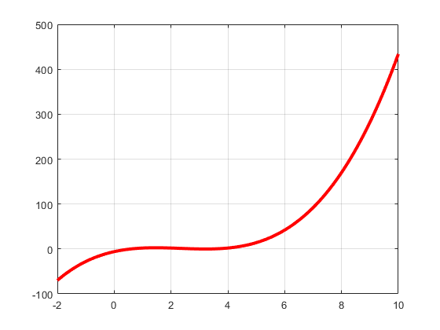
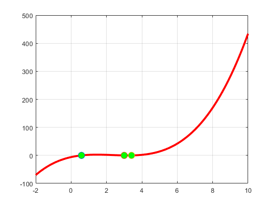

Contents
grafic
x=linspace(-2,10,100);
y=x.^3-7.*(x.^2)+14.*x-6;
plot(x,y,'r','Linewidth',3,'MarkerFaceColor','y','MarkerSize',10,'MarkerEdgeColor','g')
grid on

metoda bisectiei
f=inline('x.^3-7.*(x.^2)+14.*x-6','x');
r1=MetBisectie(f, 0, 1, 10^(-5))
r2=MetBisectie(f, 1, 3.2, 10^(-5))
r3=MetBisectie(f, 3.2, 4, 10^(-5))
hold on
plot(r1,f(r1),'o','MarkerFaceColor','g','MarkerSize',10)
plot(r2,f(r2),'o','MarkerFaceColor','g','MarkerSize',10)
plot(r3,f(r3),'o','MarkerFaceColor','g','MarkerSize',10)
grid on
r1 =
0.5858
r2 =
3.0000
r3 =
3.4142
